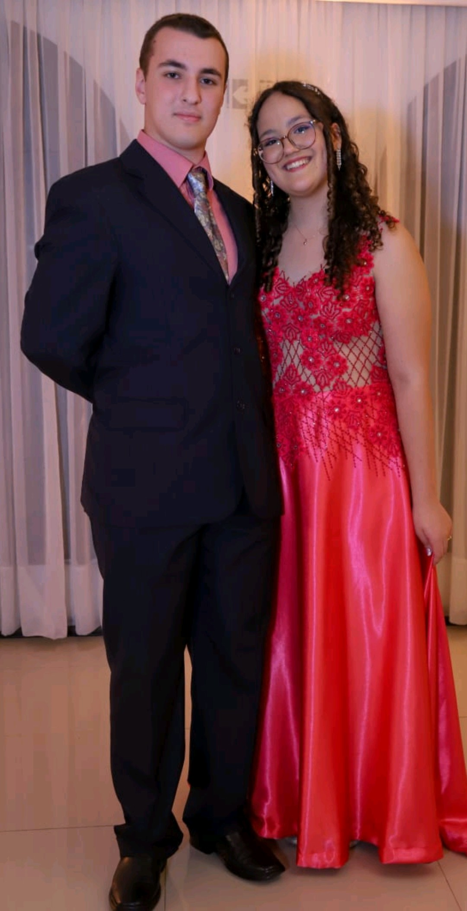

Idade: 17 anos
Aniversário: Júlia: 16/04 Thomas: 11/01
Hobbies: Júlia: Pintar e Música Thomas: Música e Academia
Sobre a Júlia: Sou uma pessoa extrovertida, gosto de conversar e de passar tempo com pessoas. Gosto muito de café, churraco, doces e chá. Minha matéria preferida é biologia. Minha cor preferida é amarelo.
Sobre o Thomas: Sou uma pessoa introvertida, toco muitos instrumentos, entre eles: Tuba, viola, bumbo, violão. Gosto muito de café, torresmo e polenta. Minha matéria preferida é química.
